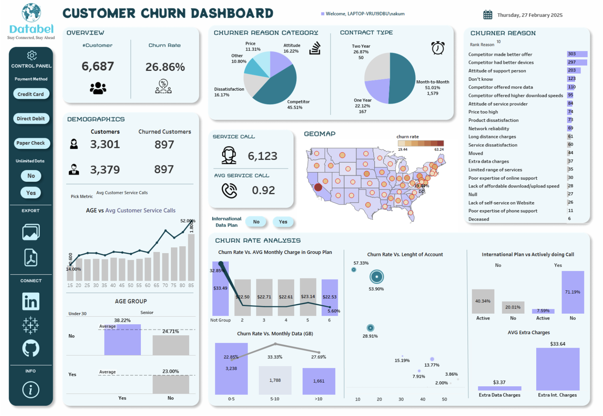

1) Built a conversational AI chatbot for JUIT, using Hugging Face API and Flask backend. The bot leverages a
dataset of 534 training intents and spaCy to craft context-aware responses.
2) Optimized the training pipeline for low-resource systems, achieving an overall accuracy of 94%.
Tech used: spaCy, Flask, Hugging Face API, NLP.
PROFESSIONAL EXPERIENCE
Here is an overview of my professional experience:
-
Data Scientist Intern – Parabox -Remote (Oct 2024 - Dec 2024)
Engineered a hybrid ensemble model that integrates a finely tuned XGBoost and CNN, leveraging a weighted probability averaging technique to boost predictive performance and achieve an accuracy of 97%.
Implemented advanced image pre-processing methods, including median blur and Total Variation (TV) Denoising via OpenCV, to enhance image quality and reduce noise in medical imaging data.
Facilitated cross-functional collaboration between technical and medical teams through bi-weekly meetings.
PROJECTS

1) Achieved 72% accuracy in image dehazing using a single FFA-Net model.
2) Designed a 3D attention mechanism to enhance feature extraction, significantly improving visibility restoration.
Tech used: Python, React.js, Flask, OpenCV, PIL, Pytorch, Keras.
Churn Prediction

1) Customer churn is a critical issue for businesses, and analyzing churn patterns helps in developing retention strategies. This project consists of two key parts:
1) Churn Analysis
2) Churn Prediction
Tech used: Tableau, Logistic Regression, Random Forest, KNN.

1) Developed a movie recommendation system utilizing collaborative and content-based filtering methods; integrated real-time data via Web API, resulting in an impressive precision rate of 0.88 while personalizing user interactions with tailored content.
2) Designed a modular data pipeline for preprocessing and vectorizing movie data with CountVectorizer and cosine similarity, resulting in improved recommendation accuracy and efficiency.
Tech used: MYSQL, NLP, webAPI.

Research Experience
Attention Mechanism Based Novel Multi-Branched Approach for BiLSTM Model
Jun 2024 – Present
- Developed a novel BiLSTM model with a multi-branch architecture, enhancing accuracy by 3% over recent state-of-the-art methods in multiple applications, in collaboration with professor Dr. Pardeep Garg.
- Currently authoring a paper on this approach for submission to IEEE Transactions on Neural Networks and Learning Systems (Impact Factor of 10.2).
ACHIEVEMENTS
Some of my notable achievements:
-
Clear Vision Challenge - Oct 2024
- View Certificate
- Led a team in a prestigious one-week AI event organized by the 'Centre of Excellence in Artificial Intelligence for Education.'
- Secured 3rd place among top-tier participants, showcasing technical expertise, leadership, and creativity.
-
AI - Boon or Bane - Mar 2024
- View Certificate
- Achieved 3rd position in an on-site debate, engaging in profound discussions with 20 peers on the ethical and societal implications of AI.
-
Innovate with NVIDIA - Nov 2023
- View Certificate
- Developed an IoT-Based Water Quality Estimator with an impressive 94.8% accuracy, leveraging Logistic Regression and Oxidation-Reduction Potential (ORP) analysis.
-
CGPA Felicitation
- View Certificate
- I am honored to have been one of the top 10 students from the CSE program in my year, recognized for maintaining an exemplary 9+ CGPA. This milestone was celebrated during Freshers' Night by our esteemed Vice Chancellor, Prof. Rajendra Kumar Sharma, and Registrar, Rakesh Bassi.
- This acknowledgment not only underscores my dedication to academic excellence but also inspires me to pursue even greater milestones in my technical journey.
EXPERIENCE
Where I have volunteered in my College:
JYC
Coordinator
Sep 2022 - PRESENT
Overseeing educational initiatives for 24 underprivileged students and organizing workshops.
SIAM JUIT
Senior Member
Mar 2023 - PRESENT
Coordinating technical events to enhance engagement within the tech community.
UBC [United Bhangra Crew]
Senior Member
Sep 2022 - PRESENT
Showcasing cultural heritage through performances.
University Grants Commission (UGC)
UGC Saarthi
Jun 2023 - Oct 2024
Guided students in navigating NEP 2020 initiatives.
TECH
Technologies / Tools I like working with.
Deep Learning Python Machine Learning TensorFlow Keras PyTorch OpenCV GitHubEDUCATION
MY Education
B.Tech. in Computer Science & Engineering
Jaypee University of Information and Technology, Solan
2022 - 2026
CGPA: 9.15 (till 5th semester)
CGPA: 9.15 (till 5th semester)
Class 12th
Guru Teg Bahadur Public School, Faridkot, Punjab
2020 - 2022
Percentage: 82.80
Percentage: 82.80
Class 10th
Dasmesh Public School, Faridkot, Punjab
2007 - 2020
Percentage: 93.60
Percentage: 93.60
CERTIFICATIONS
Machine Learning with Python - IBM

Database Structures and Management with MySQL - Meta
Python Foundation - Infosys Springboard
Introduction to Data Science in Python - University of Michigan